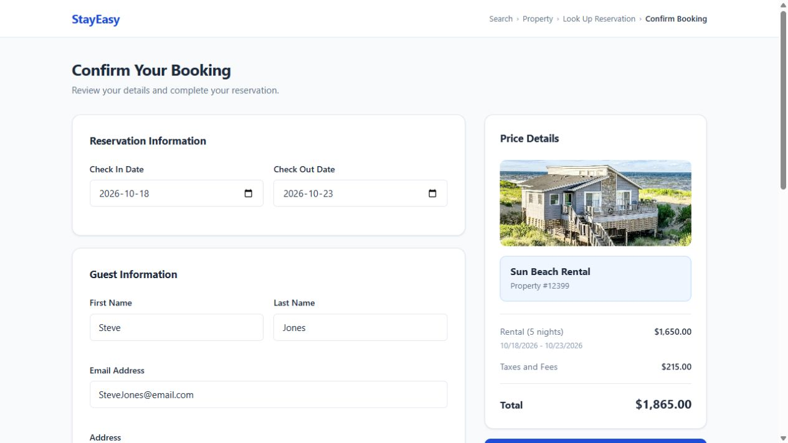

Professional work and personal development, with context about what each example demonstrates.
Professional work · Public demo
Safely SDK demo
● ● ●demo.safely.com/be

Live-site capture · October 2026
Embedded SDK · Travel insurance
Designed and engineered a standalone travel insurance SDK and demo booking application, connecting an embedded TypeScript experience with Safely's external APIs. The public demo provides a way to explore the product; its source code remains private.
What to explore
How a travel insurance experience fits into a host booking interface. The engineering work brought together SDK design, API integration, and end-to-end TypeScript implementation. Broader responsibilities across Angular applications, Java/Spring Boot services, and production delivery are summarized on the About page.
A dedicated home for a long-running fantasy football league's standings and achievements. The current milestone uses typed sample data and is deployed on Vercel.
Engineering decisions
Reusable statistic cards and explicit TypeScript models keep presentation separate from league data.
Standings and win percentages are derived from records, including ties.
Theme tokens support persistent light and dark modes, with responsive tables and keyboard-accessible team details.
League branding is separated from shared presentation to support future reuse.
Historical data, dedicated navigation, and backend persistence with Supabase/PostgreSQL are planned future milestones.